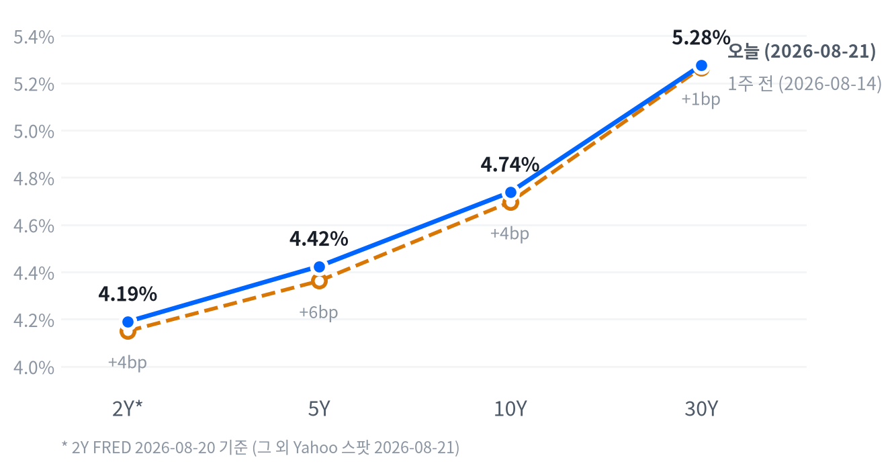

재무부장관 스콧 베센트가 장기채 바이백 규모를 최소 두 배(오퍼레이션당 20억→40억 달러 이상)로 늘리겠다고 밝히고 8월 S&P Global 플래시 종합 PMI가 56.0으로 4년래 최고치를 기록하면서, 전날 국채금리 급등·유가 상승·부진한 실적이 겹쳐 3주 만에 최대 낙폭을 기록했던 3대 지수가 일제히 반등했다. 다우가 +517.80포인트(+0.98%)로 지수 중 가장 크게 올랐고, 삼성전자(+3.87%)·SK하이닉스(+2.31%)는 주주환원 기대에 힘입어 전일 급락분을 대부분 만회했다.
다만 국채금리는 기대인플레 주도로 재차 소폭 상승했고(10년물 +4.2bp), 금은 달러 약세와 재정 우려 속에 +3.22% 급등하며 3개월래 최고치($4,661.60)를 새로 썼다 — 반등 장세 이면에서도 안전자산 수요는 오히려 강해진 하루였다.
동인. 오늘 반등의 진앙은 재무부의 국채 바이백 확대 발표였다. 스콧 베센트 재무장관이 장기채 바이백 규모를 최소 두 배로 늘리겠다고 밝히며 금리 진정 기대를 자극했고, 여기에 8월 S&P Global 플래시 종합 PMI가 56.0으로 4년래 최고치를 기록하며 리스크온 분위기를 더했다. 다우가 +0.98%로 지수 중 가장 크게 올랐고 소재·헬스케어·경기소비재가 섹터 상승을 주도했다.
크로스에셋 정합성. 다만 이 반등은 매크로 전반의 완전한 리스크온이라기보다 혼재된 신호에 가깝다. 국채금리는 오히려 기대인플레 주도로 소폭 더 올랐고(10년물 +4.2bp, 전량 기대인플레 기여), 금은 3개월래 최고치(+3.22%)를 경신했다. PMI 서프라이즈가 성장 기대를 높이는 동시에 기대인플레도 밀어올리는 양날의 재료로 작용해, 주식·채권이 동시에 안도하기보다 주식만 반등하고 채권은 여전히 약세(금리 상승)에 머무는 비대칭이 나타났다. 신용시장(하이일드 +2bp, 투자등급 +1bp)은 소폭 확대에 그쳐 아직 스트레스 신호는 아니다.
다음 촉매. 다음 세션 관전 포인트는 세 갈래다. 바이백發 안도 랠리가 오후 들어 상승폭의 1/3~1/2를 반납했다는 외신 보도대로 이 재료의 힘이 이어지는지, WTI의 오늘 되돌림이 이란發 지정학 프리미엄의 소멸을 의미하는지, 그리고 다음 주 잭슨홀 심포지엄에서 연준 의장 케빈 워시의 연설이 장기금리·연준 독립성 우려를 완화할 수 있을지가 관건이다. 8/27 마벨 실적과 8/25 Conference Board 소비자신뢰지수도 단기 방향을 가를 변수다.
| 지수 | 종가 | 등락 | 등락률 |
|---|---|---|---|
| Dow | 53,277.01 | +517.80 | +0.98% |
| Russell 2000 | 3,017.87 | +25.44 | +0.85% |
| S&P 500 Value | 237.24 | +1.14 | +0.48% |
| S&P 500 | 7,674.37 | +33.21 | +0.43% |
| Nasdaq | 26,180.46 | +113.29 | +0.43% |
| S&P 500 Growth | 138.83 | +0.46 | +0.33% |
| 섹터 | 등락률 |
|---|---|
| Materials | +2.14% |
| Health Care | +1.29% |
| Consumer Discretionary | +1.15% |
| Financials | +0.93% |
| Consumer Staples | +0.79% |
| Communication Services | +0.65% |
| Industrials | +0.27% |
| Technology | +0.11% |
| Real Estate | 0.00% |
| Energy | -0.17% |
| Utilities | -2.28% |
나스닥은 개장(09:30 ET) 직후부터 밀리기 시작해 10:00 ET에 시가 대비 -0.59%까지 저점을 낮췄다가 11:30 ET에는 +0.25%까지 고점을 높였고, 이후 오후 내내 되밀려 종가는 시가 대비 소폭 마이너스권(-0.10%)에서 마감했다 — 전일 종가 대비로는 +0.43% 상승이지만 장중 흐름 자체는 오전 반등을 절반가량 반납한 모양새다. S&P500은 10:30 ET 저점(-0.07%) 이후 11:30 ET 고점(+0.41%)까지 밀어올린 뒤 소폭 되밀려 시가 대비 +0.11%로 마감했다.
러셀2000의 궤적은 대형주와 뚜렷하게 갈렸다. 10:30 ET 저점(-0.24%)을 찍은 뒤 오후 들어서도 밀리지 않고 꾸준히 올라 15:30 ET 장 후반에야 시가 대비 +0.44%로 당일 고점을 새로 썼다 — 대형주가 오전 고점 이후 상승분을 일부 반납한 것과 달리 소형주는 장 막판까지 강세를 유지했다.
이 반등의 진앙은 두 갈래다. 베센트 재무장관이 장기채 바이백 규모를 최소 40억 달러로 두 배 늘리겠다고 밝히며 "그 이상으로 늘릴 수도 있다"고 언급한 것이 금리 진정 기대를 자극해 장 초반 랠리를 이끌었고, S&P Global 플래시 PMI(합성 56.0, 4년래 최고치)가 "물가 압력은 완화되는 가운데 경기는 확장"이라는 조합으로 해석되며 리스크온 분위기를 더했다. 다만 외신은 정규장 중반(14:27 ET 기준) 상승폭이 개장 초반 대비 1/3~1/2가량 꺾였다고 보도해, 바이백 기대감이 장중 내내 상승분을 온전히 지지하지는 못했음을 시사한다.
개별 종목에서는 로스 스토어스(+8.1%)가 2분기 실적 서프라이즈로 반등에 힘을 보탰고, 마벨(-5.57%)은 8/27 실적 발표를 앞둔 밸류에이션 부담에 차익실현이 이어지며 지수 흐름과 반대로 갔다. 엔비디아도 09:30 ET 고점(+0.15%) 이후 10:30 ET 저점(-1.79%)까지 내리 밀리며 종가 -0.98%로 약세를 지속해, 나스닥 반등에도 대형 AI 대장주는 여전히 눌린 흐름을 보였다.
오늘 반등은 전일 급락의 두 축이었던 금리 충격과 유가 급등 중 금리 쪽에서 정책적 안도 재료(바이백 확대)가 먼저 나오면서 촉발됐다. 소재(+2.14%)·헬스케어(+1.29%)·경기소비재(+1.15%)가 섹터 상승을 주도하고 유틸리티(-2.28%)만 큰 폭으로 밀린 로테이션은, 오늘의 반등이 금리에 덜 민감한 업종 중심으로 진행됐고 배당·채권 대체재 성격이 강한 유틸리티만 여전히 장기금리 재상승의 부담을 받았다는 뜻으로 읽을 수 있다.
다만 금이 +3.22%로 3개월래 최고치를 경신하고 국채금리도 기대인플레 주도로 소폭 더 오른 점은, 이번 반등이 리스크온으로의 완전한 전환이라기보다 저가 매수와 안전자산 수요가 동시에 진행되는 혼재된 국면임을 보여준다. 포트폴리오 관점에서는 바이백 기대감이 오후 들어 상승폭을 다 지키지 못했다는 외신 보도를 감안해, 이 반등을 추세 전환으로 단정하기보다 다음 세션에서 국채금리가 실제로 진정되는지를 확인하는 것이 먼저다.
| 만기 | 종가(2026-08-21) | 전일比(bp) | 1주 전 | 주간 변화(bp) |
|---|---|---|---|---|
| 2Y* | 4.19% | 0.0bp | 4.15% (2026-08-13) | +4.0bp |
| 5Y | 4.424% | +3.7bp | 4.362% (2026-08-14) | +6.2bp |
| 10Y | 4.738% | +4.2bp | 4.696% (2026-08-14) | +4.2bp |
| 30Y | 5.276% | +3.9bp | 5.265% (2026-08-14) | +1.1bp |

오늘 하루로 보면 5년물 +3.7bp, 10년물 +4.2bp, 30년물 +3.9bp로 세 만기가 1bp 안팎의 좁은 범위에서 나란히 올라, 뚜렷한 스티프닝·플래트닝이라기보다 거의 평행한 약세(베어) 이동에 가깝다. 주간 단위로는 방향이 분명하다 — 5년물이 +6.2bp로 가장 크게 오르고 10년물 +4.2bp, 30년물 +1.1bp 순으로 오름폭이 줄어(5s30s 주간 -5.1bp) 벨리가 장기물보다 더 빠르게 밀린 베어 플래트닝이 이번 주 내내 이어졌다.
2Y는 FRED 기준 1주 전(8/13) 대비 +4.0bp로 방향은 같지만 관측 구간 자체가 하루 어긋나 있어(8/20 vs 8/13), 단기물이 이 플래트닝에 정확히 어느 정도 가담했는지는 단정하지 않는다 — 차트의 2Y*는 이 기준일 불일치를 나타낸 표기다.
2s10s 스프레드는 54.8bp다(2Y는 FRED 8/20, 10Y는 Yahoo 8/21 기준이 섞인 값). 두 다리의 날짜를 맞춘 FRED 동일자(8/20) 기준으로는 50.0bp로 4.8bp 낮은데, 이 차이는 5bp 문턱에 근접하지만 아직 못 미쳐 날짜 불일치를 대단히 크게 부풀리는 수준은 아니다. 당일 커브 형태를 논할 때는 두 다리 모두 Yahoo 8/21 동일자인 5s30s 스프레드 85.2bp를 기준으로 삼는다.
FRED 동일자(2026-08-20) 기준으로 본 10년물 명목금리는 하루 동안 +4bp 올랐는데, 이 상승은 실질금리 변화 없이(0bp) 전부 기대인플레이션(+4bp)에서 나왔다. 5년물도 같은 날 명목 +4bp = 실질 -2bp + 기대인플레 +6bp로 마찬가지로 기대인플레가 명목금리 상승분을 웃돌아 이끌었다(실질금리는 오히려 소폭 하락).
주간 기준으로도 10년물 명목 +6bp = 실질 -4bp + 기대인플레 +10bp, 5년물 명목 +7bp = 실질 -6bp + 기대인플레 +13bp로 기대인플레 상승이 실질금리 하락을 상쇄하고도 남는 흐름이 한 주 내내 이어졌다.
이날 발표된 S&P Global 플래시 종합 PMI가 56.0으로 4년래 최고치를 기록해 경기 확장 속도가 예상보다 빨랐다는 신호를 낸 점, 그리고 이번 주 내내 이어진 WTI 누적 상승(5일 +5.1%)이 기대인플레를 밀어올린 배경으로 꼽힌다. 다음 주 잭슨홀 심포지엄을 앞두고 연준 의장 케빈 워시의 연설과 연준 독립성 우려가 재부각된 점도 장기물 기간프리미엄에 부담을 주는 요인으로 거론된다.
10년 기간프리미엄(2026-08-14 기준)은 1일 +1.6bp·5일 +1.4bp로 확대되는 중이라, 기대인플레 주도의 금리 상승에도 국채 수급·불확실성 프리미엄이 함께 얹혀 있다는 뜻으로 읽힌다. 5년 후 5년 기대인플레(2026-08-21 기준 2.34%)는 하루 변화는 없었지만 주간으로는 +4bp 올라 장기 인플레이션 기대의 앵커가 완전히 안정적이지는 않다. 신용시장은 아직 잠잠하다 — 하이일드 스프레드(2.75%, 2026-08-20 기준, 1일 +2bp)·투자등급 스프레드(0.82%, 1일 +1bp) 모두 소폭 확대에 그쳐 스트레스 신호는 제한적이다.
30년물이 여전히 5.276%로 근 20년래 고점권을 벗어나지 못한 채 기대인플레 주도로 소폭 재상승했다. 주간 기준 베어 플래트닝(벨리가 장기물보다 더 빠르게 밀림)이 이어지는 국면에서는 장기물 신규 확대의 근거가 약하다. §9에서 다루듯 벨리(5년) 중심 보유·장기물 신규 확대 보류라는 기존 포지션을 유지하고, 30년물이 5.05% 밑으로 내려와야 듀레이션을 늘리는 쪽으로 판단을 조정한다.
| 페어 | 종가 | 등락 | 등락률 |
|---|---|---|---|
| DXY | 98.84 | -0.06 | -0.06% |
| USD/KRW | 1,385.98 | -3.42 | -0.25% |
| USD/JPY | 158.86 | +0.59 | +0.37% |
| EUR/USD | 1.1678 | +0.0004 | +0.04% |
USD/JPY는 새벽(02:00 ET) 시가 대비 +0.12%로 장중 고점을 찍은 뒤 뉴욕 정규장 들어 꾸준히 밀려 10:00 ET에 -0.38%까지 저점을 낮췄고, 이후 소폭 반등해 전일 종가 대비로는 +0.37% 오른 158.862엔에 마감했다 — 아시아·유럽 세션에서 강했던 엔화가 미국 정규장 들어 다시 약세로 돌아선 흐름이다.
DXY는 -0.06%로 사실상 보합에 머물렀지만, 같은 시간 금이 +3.22%로 3개월래 최고치를 새로 썼다는 점이 눈에 띈다. 국채금리가 오르는데도 달러가 강해지지 않고 금만 급등한 조합은, 오늘의 금 강세가 실질금리 하락이 아니라 미 국가부채 40조달러 돌파에 따른 재정 우려와 중앙은행(특히 중국) 매입 같은 구조적 재료에서 나왔다는 뜻으로 읽힌다.
원화(-0.25%)는 달러 대비 오늘도 소폭 강세를 보였다. 삼성전자·SK하이닉스 급등에 따른 외국인 자금 유입 가능성을 배경으로 추정할 수는 있으나, 이를 직접 뒷받침하는 보도는 확인되지 않아 정확한 인과관계는 미확정으로 남긴다.
| 품목 | 종가 | 등락 | 등락률 |
|---|---|---|---|
| Gold | $4,661.60 | +145.30 | +3.22% |
| Natural Gas | $2.798 | +0.065 | +2.38% |
| Brent | $93.87 | +0.09 | +0.10% |
| WTI | $86.64 | -1.19 | -1.35% |
WTI는 유럽장 이른 시간(05:00 ET) 시가 대비 -0.79%로 저점을 찍은 뒤 한 시간 만에 +1.19%(장중 고점 $87.51)까지 급반등했다가 정규장 들어 상당폭을 반납해 전일 종가 대비 -1.35%로 마감했다. 전날(8/20) 트럼프 대통령의 이란 경제압박 강화 발언으로 급등했던 유가가 이날 되돌려진 모습이지만, WTI 5일 누적 수익률은 여전히 플러스권에 머물러 지정학 프리미엄이 완전히 소멸하지는 않았다.
금은 새벽(01:30 ET) 시가 대비 -0.13%로 잠깐 저점을 찍은 뒤 정규장 내내 꾸준히 올라 13:00 ET에 +2.15%까지 고점을 높였고, 이후 소폭 되밀렸어도 전일 종가 대비 +3.22%($4,661.60)로 마감해 3개월래 최고치를 새로 썼다. 오늘 원자재 중 가장 큰 변동폭으로, 달러 약세와 재정 우려·중앙은행 매입이 배경으로 꼽힌다.
천연가스(+2.38%)도 오늘 원자재 중 두 번째로 큰 폭 올랐지만 개별 계절적·수급 요인에 따른 변동성이 커 장중 궤적 데이터는 확인되지 않는다. Brent(+0.10%)는 WTI와 달리 보합권에 머물러, 오늘 유가 되돌림이 서부텍사스산 쪽에 더 집중됐음을 보여준다.
국면은 오늘도 교착에 머문다. 오늘은 새로 발표된 헤드라인 경제지표가 없어 성장·인플레 두 축의 점수가 어제와 같은 관측치로 계산되고, 산술적으로도 국면이 움직일 수 없는 하루였다. 두 축 모두 여전히 어느 쪽으로도 뚜렷하게 기울지 않는 중립권에 머문다(성장축 -0.182, 인플레축 -0.264). 이 국면이 이어진 지는 닷새째이고, 마지막 국면 전환(8/17) 이후의 5영업일 잠금도 오늘로 막 풀렸지만 신규 발표 자체가 없어 이동 여부를 논할 대상이 없다.
성장 쪽은 고용·생산활동이 완만한 개선·보합권에 머무는 사이 소비가 뚜렷하게 꺾이면서 셋을 합친 성장축 전체가 방향을 잃은 상태다. 물가 쪽도 CPI·PPI의 완만한 둔화와 미시간대 기대인플레의 재가속 판정이 뒤섞여 순합산으로는 완만한 디스인플레이션 그 이상도 이하도 아니다.
이 판정은 실제로 새로운 지표가 축 점수를 밀어야만 국면이 넘어간다는 원칙 위에 서 있다. 오늘 발표된 S&P Global 플래시 PMI처럼 시장이 주목하는 지표라도 이 축 점수 체계에 포함되지 않으면 국면은 어제의 판단을 그대로 승계한다.
고용은 개선 쪽이다. 일곱 개 지표 가운데 다섯이 개선 방향을 가리킨다. 가장 뚜렷한 개선은 신규 청구 4주 평균으로, 20.4만 건까지 낮아져 전주 수정치(19.98만 건)보다 늘었는데도 최근 추세 판정으로는 뚜렷한 개선에 속한다 — 헤드라인 수치의 컨센서스 하회 서프라이즈가 모멘텀 판정에 더 크게 반영된 결과다. 구인건수(JOLTS)는 735.9만 건으로 전월 753.7만 건보다 숫자상으로는 줄었지만 완만한 개선 추세로 집계됐다. 다만 시간당 임금 증가율은 +0.05%로 전월(+0.29%)보다 뚜렷이 둔화돼, 고용축 안에서도 청구·구인 지표와 임금 지표가 다른 신호를 낸다. 고용축 +0.398
| 지표 | Actual | Forecast | Previous | 발표일 | 판정 |
|---|---|---|---|---|---|
| 신규 실업수당 청구(주간) | 206K | 210K | 212K | 2026-08-20(주간 8/15) | 하회▼ |
| 신규 청구 4주 평균 | 204K | — | 199.75K | 2026-08-20(주간 8/15) | |
| 계속 실업수당 청구 | 1,799K | — | 1,781K | 2026-08-20(주간 8/8) | |
| JOLTS 구인건수 | 7,359K | — | 7,537K | 2026-06(기준월) | |
| 비농업 고용(증감) | -23K | — | +20K | 2026-07(기준월) | |
| 실업률 | 4.1% | — | 4.2% | 2026-07(기준월) | |
| 평균 시간당임금 MoM | +0.05% | — | +0.29% | 2026-07(기준월) |
생산·활동은 보합이다. 다섯 개 지표 중 셋이 개선 방향이지만 나머지가 반대로 움직여 축 전체 방향은 뚜렷하지 않다. 기존주택판매는 406만 건으로 전월(413만 건)보다 줄었지만 완만한 개선으로 판정됐고, 내구재 주문은 +0.47%로 전월(-4.00%)에서 반등해 개선 쪽에 무게를 보탰다. 반면 산업생산은 전월비 +0.2%로 플러스는 유지했지만 전월(+0.27%)보다 증가폭이 줄어 완만한 후퇴로 집계됐다. 이날 별도로 발표된 S&P Global 플래시 종합 PMI는 56.0으로 4년래 최고치를 기록해 경기 확장 속도가 예상보다 가팔랐음을 보여줬지만, 이 지표는 이 축의 점수 산정 대상에 포함되지 않아 생산·활동축 자체는 움직이지 않았다. 생산·활동축 +0.224
| 지표 | Actual | Forecast | Previous | 발표일 | 판정 |
|---|---|---|---|---|---|
| 산업생산 MoM | +0.20% | — | +0.27% | 2026-07(기준월) | |
| 내구재 수주 MoM | +0.47% | — | -4.00% | 2026-06(기준월) | |
| 신규주택판매 | 628K | — | 618K | 2026-06(기준월) | |
| 기존주택판매 | 4.06M | 4.06M | 4.13M | 2026-08-11 | 부합= |
| 실질GDP 성장률 QoQ(연율) | +1.5% | — | +2.1% | 2026-04(기준월) | |
| S&P Global 플래시 제조업 PMI | 53.2 | 53.9 | 53.9 | 2026-08-21 | 하회▼ |
| S&P Global 플래시 서비스업 PMI | 56.8 | 54.0 | 54.6 | 2026-08-21 | 상회▲ |
| S&P Global 플래시 종합 PMI | 56.0 | — | — | 2026-08-21(4년래 최고) | |
| 필라델피아 연은 제조업지수 | 47.4 | 24.1 | 41.4 | 2026-08-20 | 상회▲ |
소비는 뚜렷하게 악화됐다. 두 지표 모두 반대 방향 없이 나빠지며 소비축이 4축 중 가장 크게 꺾였다. 소매판매는 7월 전월비 -0.58%로 6월 +0.25% 증가에서 감소로 전환했고, 미시간대 소비자심리지수는 49.5로 전월(44.8)보다 숫자상으로는 올랐지만 추세 판정으로는 여전히 악화 흐름에서 벗어나지 못했다. 성장축을 구성하는 세 축 가운데 소비 하나가 고용·생산의 개선분을 상쇄하는 구도가 계속된다. 소비축 -1.168
| 지표 | Actual | Forecast | Previous | 발표일 | 판정 |
|---|---|---|---|---|---|
| 소매판매 MoM | -0.58% | — | +0.25% | 2026-07(기준월) | |
| 미시간대 소비자심리지수 | 49.5 | — | 44.8 | 2026-06(기준월) |
물가는 둔화 쪽이지만 폭이 크지 않다. 여덟 지표 중 셋만 뚜렷하게 둔화 방향을 가리켜 절대다수는 아직 재가속이나 교착에 머문다. 소비자물가 전월비는 +0.07%로 전월(-0.42%)에서 반등했지만 여전히 낮은 수준이라 추세 판정으로는 뚜렷한 둔화로 분류됐고, 생산자물가도 전월비 -0.03%로 두 달 연속 마이너스를 이어가며 같은 판정을 받았다. 반대로 미시간대 1년 기대인플레는 4.6%로 전월 4.8%보다 숫자는 낮아졌음에도 최근 수개월 추세 판정에서는 재가속으로 분류돼, CPI·PPI의 완만한 둔화와 기대인플레의 재가속 판정이 물가축 안에서 정면으로 엇갈린다. 물가축 -0.264
| 지표 | Actual | Forecast | Previous | 발표일 | 판정 |
|---|---|---|---|---|---|
| CPI YoY | 3.54% | — | 3.73% | 2026-07(기준월) | |
| CPI MoM | 0.07% | — | -0.42% | 2026-07(기준월) | |
| 근원 CPI YoY | 2.79% | — | 2.81% | 2026-07(기준월) | |
| 근원 CPI MoM | 0.22% | — | -0.02% | 2026-07(기준월) | |
| PPI 최종수요 MoM | -0.03% | — | -0.11% | 2026-07(기준월) | |
| PCE 물가지수 YoY | 3.67% | — | 4.08% | 2026-06(기준월) | |
| 근원 PCE YoY | 3.29% | — | 3.42% | 2026-06(기준월) | |
| 미시간대 1년 기대인플레 | 4.6% | — | 4.8% | 2026-06(기준월) |
연준은 다음 회의(9월 16일 FOMC)에서 금리를 동결하고, 인하 재개는 4분기 이후로 미룰 가능성이 가장 유력한 경로로 유지된다. CME FedWatch 기준 동결 확률은 68.4%로 어제와 같은 수준이다 — 오늘은 이 확률을 움직일 만한 신규 헤드라인 발표가 없었다. 고용·생산활동 축의 완만한 개선이 조기 인하 필요성을 낮추는 동시에 물가축의 완만한 디스인플레이션이 추가 인상 필요성도 낮추는 조합은 여전히 교착 국면과 정합적이다.
이 경로를 무효화할 반증 조건은 그대로다. 9월 중순 발표될 8월분 CPI가 헤드라인 전월비 0.3% 이상으로 재가속하면 동결-우선 경로는 근거를 잃는다. 오늘의 확률 이동은 0%p로 시점 판단을 바꿀 임계치(15%p)에 전혀 못 미쳐, 9/16 동결·4분기 인하 재개라는 시점 판단 자체는 그대로 유지한다.
인플레축의 디스인플레이션 모멘텀(인플레축 -0.264)이 지속되면 실질금리가 정점을 지났다는 기대가 장기물 총수익과 금 보유비용 하락을 동시에 지지하는 경로다. 다만 오늘 FRED 동일자(8/20) 분해에서는 10년물 상승분(+4bp)이 실질금리 변화 없이(0bp) 전부 기대인플레(+4bp)에서 나와, 이 경로가 가리키는 실질금리 하락은 아직 뚜렷하게 확인되지 않고 있다. Core PCE YoY가 3.0% 밑으로 추가 둔화되거나 30Y가 5.05% 밑으로 내려오면 이 경로에 더 무게가 실린다.
다만 이 구조적 우호 판단(3~6개월)과 §9의 2~6주 채권 스탠스(숏 바이어스)는 방향이 정반대다. 30년물이 5.276%로 여전히 근 20년래 고점권을 벗어나지 못했고 10년 기간프리미엄도 2026-08-14 기준 1일 +1.6bp·5일 +1.4bp로 확대되는 중이라, 2~6주 시계에서는 아직 듀레이션을 늘릴 만큼 추세가 꺾였다고 보지 않는다. 오늘 기대인플레 주도의 재상승도 전술적 숏 바이어스를 정당화하는 쪽에 더 가깝고, 구조적 전망이 실제 스탠스로 이어지려면 30Y가 5.05% 밑으로 내려오는 확인이 필요하다.
성장 모멘텀이 정체된 가운데(성장축 -0.182) 완만한 디스인플레이션이 상쇄돼 주식·에너지 모두 중립을 유지한다. 오늘 S&P Global 플래시 PMI 서프라이즈(종합 56.0, 4년래 최고)와 국채 바이백 확대 기대가 지수를 +0.43~0.98% 밀어올렸지만, 이는 3~6개월 구조 판단을 흔들 만한 매크로 레벨 이벤트라기보다 단기 반등 재료로 본다. ISM 제조업 PMI가 50을 상회한 채 지속되거나 10년물이 4.5% 밑으로 내려오면 최종수요 경로가 우호 쪽으로 넘어간다.
성장 정체 속 디스인플레이션이 이어지면 실질금리 스프레드가 좁혀질 것이란 기대가 달러 약세 경로를 지지한다. DXY는 최근 20일 -2.59%로 완만한 약세 추세를 유지하는 중인데, 이 추세가 -3% 이상으로 가속되거나 FedWatch 인하 확률이 확대되면 비우호 판정에 더 무게가 실린다.
이 그룹은 매크로 지표와 사이클이 따로 논다. 소비축 부진과 무관하게 기업의 AI 데이터센터 캐펙스는 독립적인 성장 경로라, 오늘 삼성전자(+3.87%)·SK하이닉스(+2.31%)의 급등도 매크로 지표가 아니라 주주환원 기대라는 업종 내부 재료가 원인이었다.
반대로 마벨(-5.57%)은 8/27 실적 발표를 앞둔 밸류에이션 부담에 따른 차익실현으로 미국 AI 인프라 바스켓을 눌렀다. 메모리는 마이크론 등 주요업체의 회계연도 가이던스 상향이 지속되거나 D램 현물가 추세가 살아나면 우호 판정을 유지하고, AI 인프라는 30년물이 5.4%를 다시 넘어서거나 하이퍼스케일러의 3분기 캐펙스 가이던스가 꺾이면 비우호 쪽으로 넘어간다 — 지금은 30Y가 5.276%로 그 문턱에 못 미쳐 중립을 유지한다.
다음 주간 신규 실업수당 청구는 8월 27일 정례 목요일 일정대로 발표된다. Conference Board 소비자신뢰지수는 8월 25일 발표 예정이고, ISM 제조업 PMI는 9월 초 공개된다.
다음 주 잭슨홀 경제정책 심포지엄에서는 연준 의장 케빈 워시의 연설이 최대 변수로 꼽힌다. FOMC 정례회의는 9월 16일로 예정돼 있으며 CME FedWatch는 이 회의에서의 동결 확률을 68.4%로 반영 중이다.
8월분 CPI는 통상 일정대로면 9월 중순 발표되며, 이 수치가 헤드라인 전월비 0.3% 이상으로 재가속할 경우 현재의 동결-우선 정책 경로 판단을 되짚어야 한다.
어제 걸어둔 주식 확대 트리거 중 '11개 섹터 중 10개 이상이 1개월 플러스'라는 브레드스 확산 조건이 오늘 정확히 10개로 충족되며 중립에서 소폭확대로 한 단계 올라간다. S&P 500의 50DMA 4% 상회 조건(오늘 1.77%)과 VIX 22 상회 조건(오늘 15.13)은 여전히 미달이지만, 대형 기술주 쏠림이 완화되고 상승 저변이 소재·헬스케어·금융 등으로 넓어지는 흐름 하나만으로도 확대 트리거는 충족된다.
채권·FX·귀금속은 트리거 미충족으로 전 등급을 유지한다. 채권은 30년물 5.40% 상회(오늘 5.276%)·5s30s 주간 15bp 이상 확대(오늘 -5.1bp) 모두 확대 조건에 못 미쳤고, 축소 조건인 30년물 5.05% 하회도 충족되지 않아 숏 바이어스를 그대로 가져간다. FX도 DXY 20일 -3.0% 이하 조건(오늘 -2.59%)에 못 미쳐 달러 소폭 숏을 유지하고, 귀금속은 금 20일 +15.0% 이상 조건이 오늘 +14.6%로 근접했지만 아직 충족 전이라 소폭확대를 유지한다.
에너지는 어제 지정학 프리미엄 재점화로 확대한 지 이틀째로 3영업일 잠금이 아직 풀리지 않아 추가 확대는 불가능하고, WTI 5일 수익률이 +5.15%로 축소 조건(+2% 미만)에도 못 미쳐 소폭확대를 유지한다. 메모리는 미국 상장 바스켓의 20일 초과수익이 -5.82%p로 어제(-10.83%p)보다 개선됐지만 확대 조건(+5.0%p 이상)에는 여전히 못 미쳐 중립을 지키고, AI 인프라도 5일 초과수익이 -4.9%p로 마이너스권에 머물러 중립을 유지한다.
| 자산군 | 등급 | 유지 | 전일대비 | 논거 | 다음 분기점 |
|---|---|---|---|---|---|
| 주식 | 소폭확대 대형 성장주는 선별 유지, 소재·헬스케어·소형주·가치주 확대 | 1영업일 | ▲1단계 | 브레드스 확산 트리거(11개 섹터 중 10개 이상 1개월 플러스, 오늘 정확히 10개)가 충족되며 대형 기술주 쏠림이 완화되고 상승 저변이 소재·헬스케어·금융 등으로 넓어지는 국면을 2~6주 시계에서 확인한다. 다만 S&P 500의 50DMA 상회폭은 아직 1.77%에 그쳐 추세 자체가 강하게 가속됐다고 보기는 이르다. | S&P 500 50DMA +4.0% 상회(현재 1.77%) 또는 11개 섹터 전부 1개월 플러스(현재 10개) 시 추가 확대, VIX 20 상회(현재 15.13) 또는 S&P 500 20DMA -1.0% 이상 하회(현재 +0.39%) 시 중립 복귀 |
| 채권 | 숏 바이어스 커브: 벨리 OW · 5Y 중심 보유, 30Y 신규 확대 보류 | 6영업일 | 유지 | 30년물이 5.276%로 근 20년래 최고 수준권을 벗어나지 못한 채 오늘도 기대인플레 주도로 소폭 재상승했다. 2~6주 시계에서 추세 전환을 아직 확인해주지 못해 숏 바이어스·벨리 중심 보유를 유지한다. | 30Y 5.40% 상회(현재 5.276%) 또는 5s30s 주간 +15bp 이상 확대(현재 -5.1bp) 시 숏 강화, 30Y 5.05% 하회(현재 5.276%) 시 완화 |
| FX | 달러 소폭 숏 엔화는 개별 요인이 커 DXY와 분리 점검 — USD/JPY 158~159선 | 6영업일 | 유지 | DXY가 20일간 -2.59%로 완만한 약세 추세를 유지하는 국면이 이어진다. 오늘도 원화(-0.25%)가 달러 대비 개별적으로 더 강했던 흐름은 같은 방향이다. | DXY 20일 -3.0% 이하(현재 -2.59%) 시 숏 확대, DXY 101 상회(현재 98.84) 시 시나리오 무효화 |
| 원자재 | 소폭확대 (에너지) 소폭확대 (귀금속) · 금 중심, 이중 헤지 성격 | 에너지 2영업일 · 귀금속 6영업일 | 유지 | WTI 5일 수익률이 +5.15%로 트리거 임계값 위에 머물러 소폭확대를 유지한다. 어제 트럼프 대통령의 이란 경제압박 강화 발언으로 촉발된 지정학 프리미엄이 오늘 WTI(-1.35%) 되돌림에도 5일 누적으로는 아직 살아있다. 금은 20일 +14.6%로 안전자산 수요와 달러 약세를 동시에 반영하는 이중 헤지가 오늘 +3.22% 급등으로 한층 강화됐다. | WTI 5일 +12% 이상(현재 +5.15%) 시 비중확대, +2% 밑으로 되돌리면 축소 검토. 금 20일 +15.0% 이상(현재 +14.6%) 시 귀금속 확대 |
| 메모리 | 중립 OW에서 축소 — 초과수익 마이너스, 다만 오늘 개선 | 4영업일 | 유지 | 미국 상장 메모리 바스켓의 S&P500 대비 20일 초과수익이 -5.82%p로 어제(-10.83%p)보다 개선됐지만 여전히 마이너스권이라 확대 조건에는 못 미친다. 삼성전자·SK하이닉스의 오늘 급등(+3.87%·+2.31%)은 한국 업체 주주환원이라는 개별 재료이고, AI 데이터센터 캐펙스 사이클의 구조적 강세는 유효하나 미국 상장주의 2~6주 상대강도 회복은 아직 확인 전이다. | 20일 초과수익 +5.0%p 이상 재돌파(현재 -5.82%p) 시 확대, -15.0%p 이하로 악화(현재 -5.82%p) 시 UW 검토 |
| AI 인프라 | 중립 실적 모멘텀 종목만 선별, 파이낸싱 리스크는 개별 이슈로 분리 | 6영업일 | 유지 | 5일 초과수익이 -4.9%p로 여전히 마이너스권이다. 오늘 마벨 급락(-5.57%)이 8/27 실적을 앞둔 밸류에이션 부담을 다시 부각시켰고, 광네트워킹과 전력인프라의 온도차가 여전히 커 테마 단위 베팅은 이르다. | 5일 초과수익 +5.0%p 이상(현재 -4.9%p) 시 확대, 하이퍼스케일러 캐펙스 가이던스 하향 확인 시 UW 검토 |
1) 국채 바이백 효과 조기 소멸. 오늘 상승분의 1/3~1/2가 오후 들어 반납됐다는 외신 보도대로 안도 랠리의 힘이 다음 세션에서 완전히 빠지고 30년물이 다시 5.4%를 향해 반등하면, 채권 숏 바이어스 확대 트리거가 충족되는 동시에 할인율 부담이 재부각되며 오늘 확대한 주식 비중에도 부담이 실린다.
2) 8월분 CPI 재가속. 오늘 기대인플레 주도로 금리가 오른 흐름이 9월 중순 발표될 8월분 CPI에서 헤드라인 전월비 0.3% 이상으로 확인되면, 현재의 동결-우선 정책 경로 판단(§8)이 무효화되고 채권·주식 양쪽에 매파적 재평가 압력이 동시에 실린다.
3) 이란發 지정학 프리미엄 조기 소멸 또는 추가 확대. 이란과의 긴장이 완화되는 시그널이 나오면 WTI 5일 수익률이 축소 트리거(+2% 미만)를 건드리며 오늘까지 유지해온 에너지 소폭확대를 되돌려야 하고, 반대로 호르무즈 통항 차질 등 실제 공급 차질이 확인되면 3영업일 잠금이 풀리는 대로 추가 확대 근거가 된다.
소재(+2.14%) 대 유틸리티(-2.28%) — 금리 민감도가 가른 섹터 로테이션. 오늘 11개 섹터 중 최대 상승·최대 하락 섹터가 정확히 금리 민감도로 갈렸다. 소재는 반등 장세에서 경기 회복 기대를 반영하며 가장 크게 올랐고, 유틸리티는 장기금리(10Y 4.738%, 5일 +4.2bp) 상승에 배당·현금흐름 안정성이라는 '채권 대체재' 매력이 약해지며 섹터 중 유일하게 2%대 낙폭을 기록했다.
금(+3.22%) — 3개월래 최고치 경신. $4,661.60으로 마감하며 오늘 원자재 중 가장 큰 변동폭을 보였다. 반등 장세·달러 약세·미 국가부채 40조달러 돌파에 따른 재정 우려·중앙은행 매입이 동시에 겹치며, 위험자산이 오르는데도 안전자산 수요가 함께 강해지는 흔치 않은 조합을 만들었다.
마벨(-5.57%) 대 삼성전자(+3.87%)·SK하이닉스(+2.31%) — 반도체 내부 온도차. 마벨은 8/27 실적 발표를 앞둔 밸류에이션 부담(최근 3주 고점 대비 약 37~40% 조정)에 차익실현이 이어진 반면, 한국 메모리 2사는 주주환원 기대에 힘입어 전일 급락분을 대부분 만회했다. 같은 반도체 밸류체인 안에서도 재료에 따라 방향이 크게 엇갈린 하루였다.
| 종목 | 종가 | 등락률 |
|---|---|---|
| Samsung Elec | ₩281,500 | +3.87% |
| SK hynix | ₩1,730,000 | +2.31% |
| Seagate | $850.00 | -0.03% |
| Micron | $966.78 | -0.77% |
| Western Digital | $459.44 | -2.05% |
삼성전자·SK하이닉스가 오늘도 각각 +3.87%·+2.31%로 강세를 이어갔다. 삼성전자는 이날 오후 4시(한국시간) 90조~110조원 규모 주주환원 계획을 발표할 것이란 전망이 매수세를 이끌었고, SK하이닉스는 일본 신규 메모리 공장 검토 소식과 함께 전날 발표한 40조원 규모 자사주 매입 계획의 여진이 이어졌다. 두 종목 모두 전날 급락(-6%대)분을 대부분 만회했다.
미국 상장 메모리주는 소폭 약세(마이크론 -0.77%, 웨스턴디지털 -2.05%, 시게이트 -0.03%)로 마감했지만, 마이크론 CEO 산제이 메흐로트라는 D램·낸드 수요가 공급을 계속 크게 초과하고 있으며 이 타이트한 상황이 2027 회계연도 이후까지 지속될 것이라고 언급했다. 웨스턴디지털은 4분기(FY2026) 조정 EPS 3.56달러, 매출 37.5억 달러(+43.8% YoY)를 발표했고 자회사 샌디스크의 데이터센터 매출은 연간 기준 +437% YoY 급증했다.
AI 데이터센터向 HBM·서버 D램 수요라는 구조적 축은 오늘도 유효하지만, §9에서 보듯 미국 상장 메모리 바스켓의 2~6주 상대강도는 여전히 마이너스권(20일 초과수익 -5.82%p)에 머물러 있다 — 다만 어제(-10.83%p)보다는 개선됐다. 오늘의 강세가 한국 업체 개별 재료(주주환원)에서 시작된 만큼, 이 흐름이 미국 상장주의 상대강도 회복으로 이어지는지를 다음 며칠 확인한 뒤 상대비중 확대를 검토하는 것이 합리적이다.
| 종목 | 분야 | 종가 | 등락률 |
|---|---|---|---|
| Coherent | 광통신 | $289.52 | -0.18% |
| GE Vernova | 전력 인프라(그리드·터빈) | $956.85 | -0.95% |
| Vertiv | 데이터센터 전력·냉각 | $261.95 | -1.01% |
| Lumentum | 광통신 | $866.71 | -1.43% |
| Marvell | AI칩·커스텀 실리콘(ASIC) | $237.04 | -5.57% |
마벨(-5.57%)은 8/27 2분기 실적 발표(가이던스 매출 약 27억 달러, YoY +35%)를 앞두고 밸류에이션 부담에 따른 차익실현이 이어지는 국면이다. 최근 3주 고점 대비 약 37~40% 조정을 받았고, UBS는 목표가를 340→300달러로 낮췄지만(매수 유지) Goldman은 180→195달러로 상향(중립 유지)하는 등 애널리스트 시각도 엇갈린다.
코히런트(-0.18%)·루멘텀(-1.43%)은 소폭 약세에 그쳤지만, 8월 한 달간 AI 옵틱스 관련 뉴스플로우는 변동성이 매우 컸다. 8/4 미국의 중국산 광통신 부품 수입 규제 검토 보도로 급등했다가 8/10 실적 경계감에 조정받는 등 등락을 반복해왔다. GE 버노바(-0.95%)·버티브(-1.01%)도 소폭 하락했지만, 모건스탠리는 2026~2028년 미국 데이터센터 전력 수요가 약 68GW에 달하는 반면 건설 중·계통 확보분은 약 30GW에 그쳐 38GW 규모의 전력 갭이 존재한다고 추정하며 두 종목을 수혜주로 지목했다.
광네트워킹(코히런트·루멘텀)과 전력인프라(GE버노바·버티브)의 온도차가 크지 않았던 오늘과 달리, AI칩·커스텀 실리콘(마벨)만 실적 경계감에 홀로 크게 밀렸다. 파이낸싱 리스크는 하이퍼스케일러 3분기 캐펙스 가이던스가 실제로 꺾이는지 확인하기 전까지는 개별 이슈로 분리해서 보고, 테마 단위 베팅보다 실적 모멘텀이 살아있는 종목 선별이 유효하다.
본 보고서는 정보 제공 목적으로 작성됐으며 투자 권유가 아니다. 시세는 Yahoo Finance, 경제지표는 FRED와 각 발표 기관(BLS·BEA·Census·DOL 등), 그 밖의 시황·업계 동향은 본문에 밝힌 언론사 출처를 따랐다. 매크로 논리(§8)·멀티에셋 스탠스(§9)는 전일 판단을 승계한 것으로 당일 등락만으로 재해석하지 않았다.